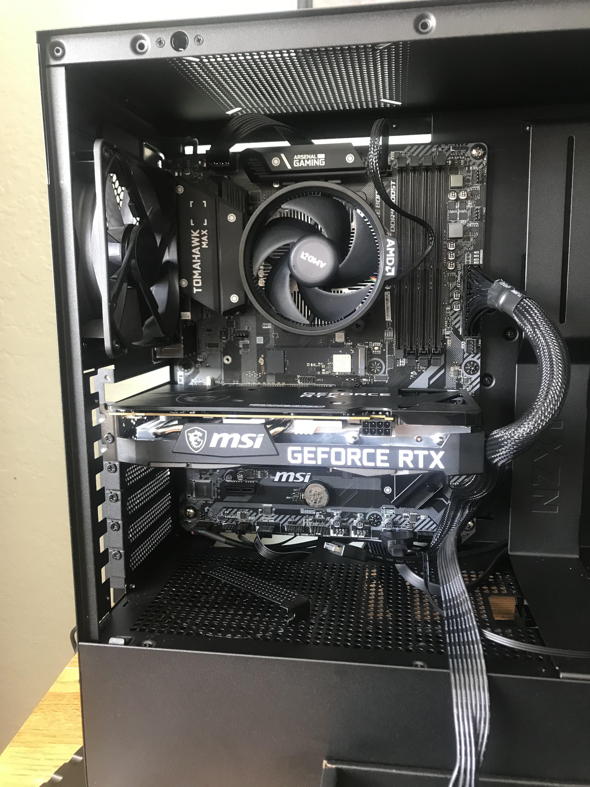
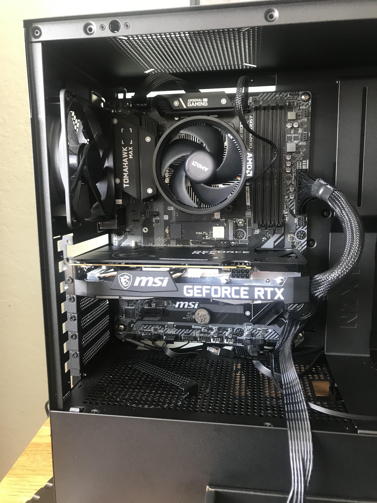

Recently in my sophomore year of high school up until this point i had been using a crappy hp pavilion laptop and I saved up for an upgrade, so I decided to build my own pc, and it worked out very well and got me into the mechanics of computers and hardware, so I did a lot of research on different parts and I know a lot about it, it is probably one of my favorite things to do, I have built myself a computer and upgraded it and I have also built my brother his pc.

 


These are pictures of my first pc build, the specs of the build are as follows:
B450 Tomahawk max, Ryzen 5 3600, RTX 3060, 16gb corsair vengeance ram, 1000w PSU, and NZXT H510Flow case
This laptop was my first computer, it was an HP pavilion laptop that had terrible specs and would take 30 minutes just to boot fully
this is a picture of my current pc setup, I upgraded to an MSI B760 Pro motherboard, an Intel i5-13400f, and an RTX 4070 which costed me close to $700
I also upgraded my peripherals from a 22 inch 1080p 144hz monitor to a 32in 1440p 165hz HDR main monitor with a 27in 1440p 180hz second monitor